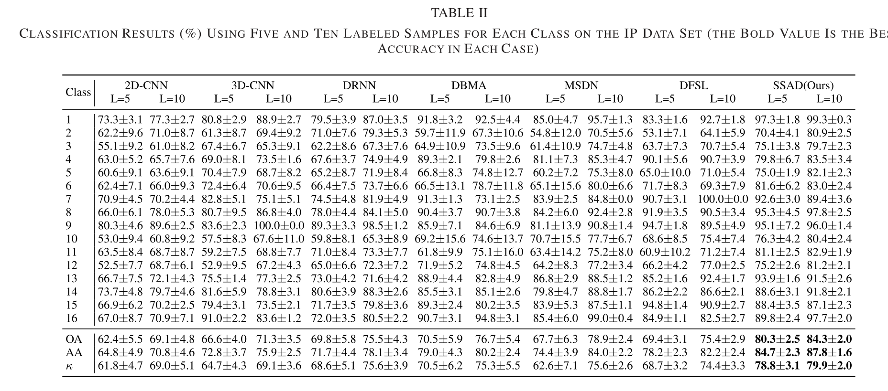

论文笔记-Self-Supervised Learning With Adaptive Distillation for Hyperspectral Image Classification

为了解决高光谱分类问题中带标签数据不足，数据标签采集困难的问题，本文提出了一种自适应Soft Label生成方法，同时提出了PCN网络结果和自适应蒸馏的网络训练方法和高光谱3D Transformation数据增强方法，联合多种方法，实现Few shot learning，最终结果显示能够通过5-10个样本，实现80%~90%的分类准确率
0. 基本信息
引用信息 > J. Yue, L. Fang, H. Rahmani and P. Ghamisi, "Self-Supervised Learning With Adaptive Distillation for Hyperspectral Image Classification," in IEEE Transactions on Geoscience and Remote Sensing, doi: 10.1109/TGRS.2021.3057768.
bibtex
1 | @article{Jun2021, |
1. 研究背景
高光谱分类问题是高光谱应用中的基本问题之一，目前高光谱分类同样需要带标签的数据（labeled data）作为训练数据。获取带标签数据通常采用以下两种方法：
1. 实地调查：准确度通常较高
2. 高分辨率图像目视解译但不论哪种方法，通常都是costly，complex以及time-consuming，并且标签数据数量有限
解决方案： 为了解决数据标签难以大规模获得的问题，目前通常有以下两种解决方法
1. few-shot learning：仍然需要少量标签，通过以下技术实现
- metric learning
- meta learning
2. 自监督学习（self-supervised learning）
- spatial relationship
- inpainting
- image reconstruction
- color transformation
- super resolution
- spatial rotation transform2. 基本思想
本文通过以下两个module解决小样本分类问题：
1. adaptive knowledge distrillation
2. 3D transformation总体流程如下
2.1 3D transformation
传统的图像变换都是二维空间的变换，而高光谱图像本身是3D数据立方体，因此本文提出一种高光谱数据立方体三维变换方法，如上图所示，包含了空间变换和光谱变换
- 空间变换：对图像进行旋转，角度为[0, 90, 180, 270]
- 光谱变换：对单个像素光谱进行镜像操作，原始光谱记为1，镜像变换后光谱记作0
2.2 Progressive Convolutional Network
每一层网络的输出均与原始高光谱图像大小保持一致，而输入则是将前n层网络的输入进行concat操作作为输入，从而构建特征提取网络。
另外每一层后紧跟一个FC Layer，用来生成分类结果向量，最终的分类结果由多层结果综合而成
2.3 Adaptive knowledge distrillation
Adaptive Soft Label： 基本思想是利用现有的带标签的数据为没有标签的数据生成Soft label，具体方法为：
- 计算每个无标签样本与带标签样本类间的SSJD：
\[ \begin{aligned} SSJD(u_i, l_i) &= \sqrt{ED(u_i, l_i) \cdot SID(u_i, l_i)} \\ SSJD(u_i, c_i) &= \sum_{r=1}^{N_{c_i}} \frac{SSJD(u_i,l_r)}{|\mathcal{C}|^{n(u_i, l_r)}} \\ P(\Phi(u_i) = c_i) &= \frac{e^{-SSJD(u_i, c_i)|\mathcal{C}|}}{\sum_{r=1}^{\mathcal{C}}e^{-SSJD(u_i, c_r)|\mathcal{C}|}} \end{aligned} \]
- 然后根据样本与每类的相似度生成该样本属于每一类的概率
- 将该概率concat起来即得到soft label
Adaptive Knowledge Distillation： 在训练的时候，计算网络输出与hard label的loss，与soft label的loss吗，以及对光谱顺序的预测，最终的损失函数为三者的求和
3. 实验结果
- 数据集：
- Indian Pines
- University of Pavia
- Houston
- Indian Pines数据集结果精度